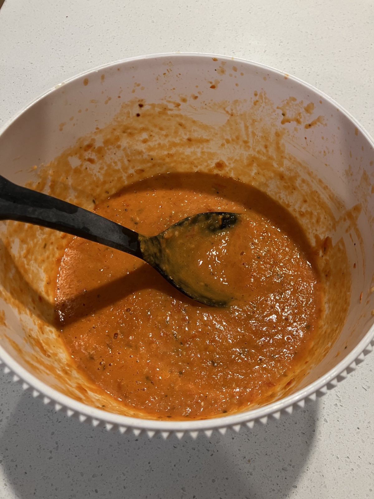

Passata
 Meat
Meat

someolive oilsomecherry tomatoes1onionsomegarlic,
Drizzle olive oil in oven tray, add cherry tomatoes, onion cut in eigths, garlic, @salt and @pepper
Roast in oven for about 30mins
Puree with stick blender